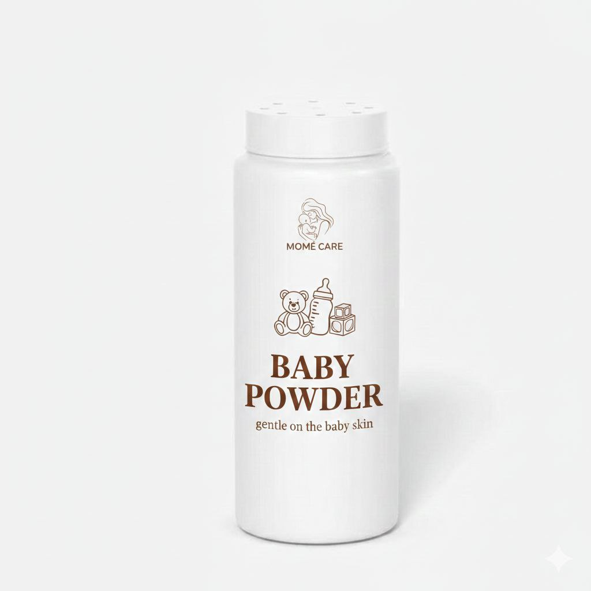
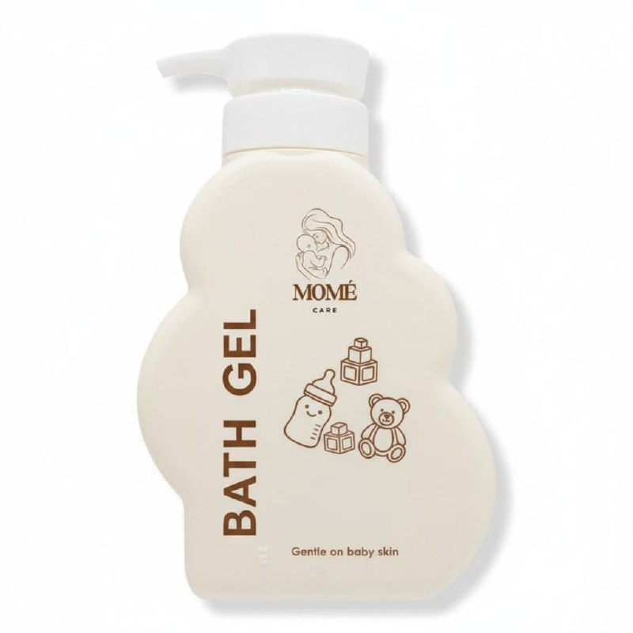
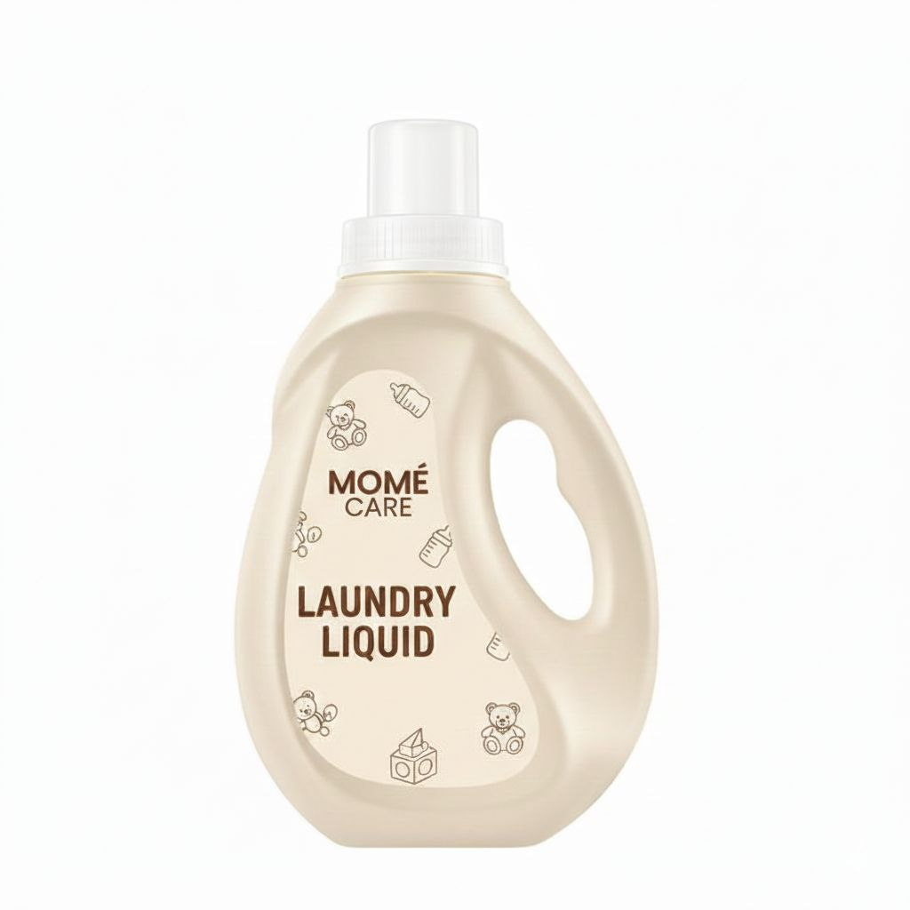
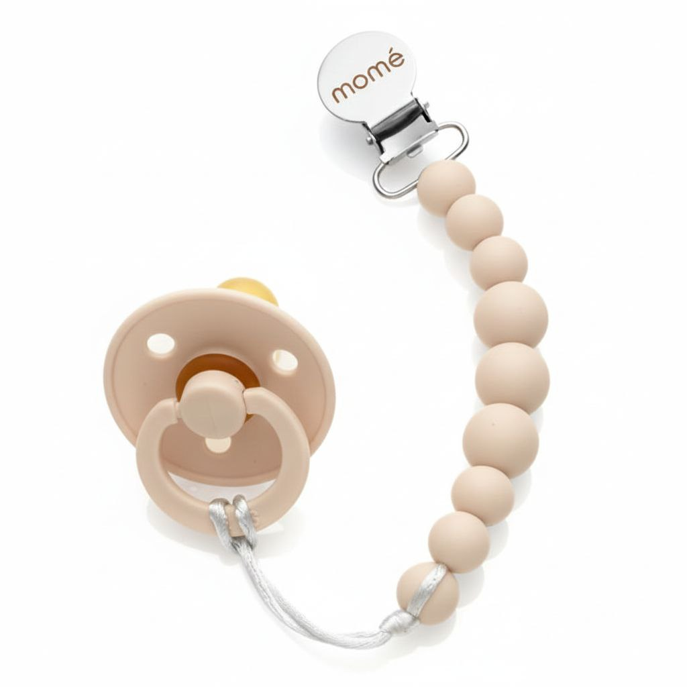
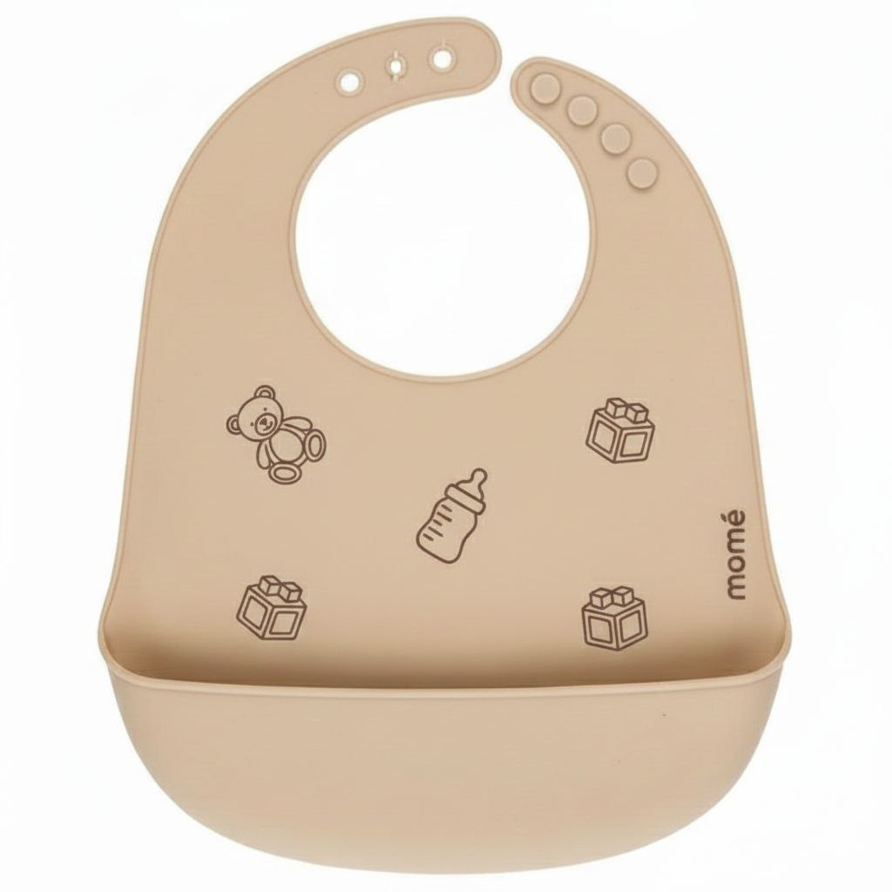

Babies Product
Mome Care creates high-quality products specially designed to support the health and well-being of babies and their mothers. Our carefully formulated range helps ensure that newborns get the best start in life while supporting mothers during pregnancy, confinement, and postnatal recovery.
Trusted by many, our products are approved by the Ministry of Health (KKM), giving parents confidence and peace of mind. From a single product, our brand has grown to four trusted products today, an achievement made possible by positive testimonials from parents who have experienced real results over the past three years.
Every parcel we send reflects our dedication not just to business, but to nurturing babies and helping mothers care for their little ones with love, care, and confidence.

For the comfort of the baby and long-lasting freshness, baby powder is also needed as part of the daily routine after bathing. The baby powder we created contains no harmful chemicals, making it safe for infants to use.
Ingredients: Cornstarch & Kernel Extract
*200 gram
Price: RM 15.60

A bath product specially created with ingredients that are gentle on babies, providing a soft feel on the skin while helping to maintain the baby’s moisture throughout the day. Our bath product uses ingredients that are approved by dermatologists.
*250 ml
Price: RM 27.80

A laundry soap specially created to wash baby clothes without containing any ingredients that may cause skin irritation to a baby’s sensitive skin. This soap has a gentle fragrance that does not irritate the sense of smell, and the scent lasts throughout the day on the clothes.
*1500 gram
Price: RM 37.00

>Our silicone bib is adjustable to fit comfortably around the baby’s neck, allowing it to be worn according to the wearer’s comfort without causing any feeling of suffocation. The material used is made from high-quality silicone to ensure that it does not cause itching or discomfort to the wearer.
Price: RM 24.90

Our silicone bib is adjustable to fit comfortably around the baby’s neck, allowing it to be worn according to the wearer’s comfort without causing any feeling of suffocation. The material used is made from high-quality silicone to ensure that it does not cause itching or discomfort to the wearer.
Price: RM 28.60